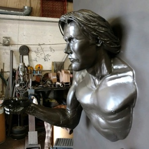

Peter P. Zorzenon
~Fine art crafted in American steel~

X


Modal Box 1
Running Thru Steel
Running Thru Steel, 6' high by 3' wide, is made of carbon steel. This piece is a self portrait of the artist running from geometric to realism as he runs through steel. The geometric side as well as realistic side is all hand welded ground and carved by hand there is no casting or molding in this or in any of artist's work. This type of steel sculpture work is a trade mark of artist. And shows true capability of the artist.